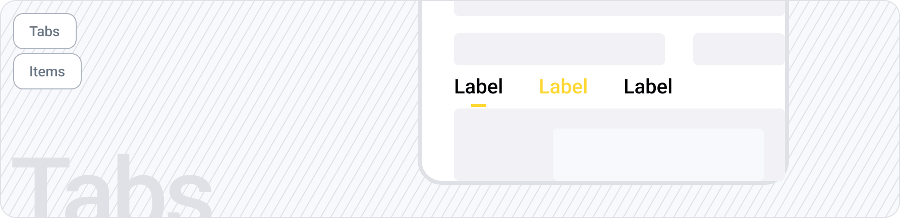
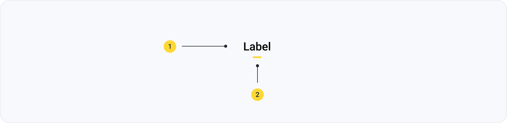
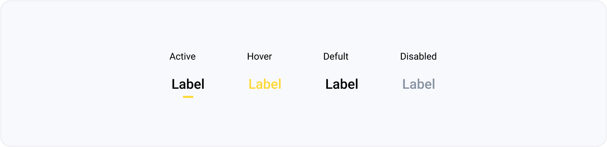
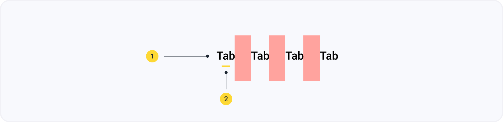

Табы
Мы используем табы для навигации между разным, но связанным контентом. Табы обычно используются на целевых страницах инструментов и на страницах сведений об элементах.
 Компонент в FigmaАнатомия
- Название таба
- Индикатор таба
Состония
Табы в данной дизайн системе могут иметь 4 состояния: активный, при наведении курсора, по умолчанию, неактивное.
Спецификация
- body/natural-800
- body/primary-600
Стандартные отступы